Mitglied werden
Mitglieder unterstützen den kulturhistorischen Wissenszugang für alle und die lebendige Vereinskultur in Möhlin.
EinzelmitgliedCHF 20.– / Jahr
Ehepaare & FamilienCHF 30.– / Jahr
Kollektivmitglieder & FirmenCHF 50.– / Jahr
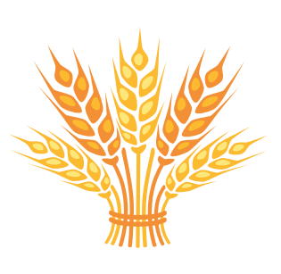
Museumsverein MöhlinDas Melihus Kontakt aufnehmenDorfmuseum in Möhlin · seit 1985
Ein historisches Bauernhaus voller Geschichten über das Bauern- und Industriedorf Möhlin-Ryburg. Entdecken Sie das Museum, seine Ausstellungen und Menschen.
 Ein Haus, das Geschichten bewahrt.
Ein Haus, das Geschichten bewahrt.Nächster Termin · 10 bis 16 Uhr
Rund ums Melihus, mit Tombola, Kaffeestube und Märchenlesung.


Willkommen im Melihus
Der Museumsverein Möhlin wurde 1985 gegründet. Im historischen Melihus, das die Ortsbürgergemeinde zur Verfügung stellt, hat er sein Zuhause gefunden.
Der Verein macht die Geschichte des Bauern- und Industriedorfes Möhlin-Ryburg für die Öffentlichkeit zugänglich. Im Museum begegnen Ihnen Wohnräume, Handwerk und Erinnerungen aus dem Dorfleben.
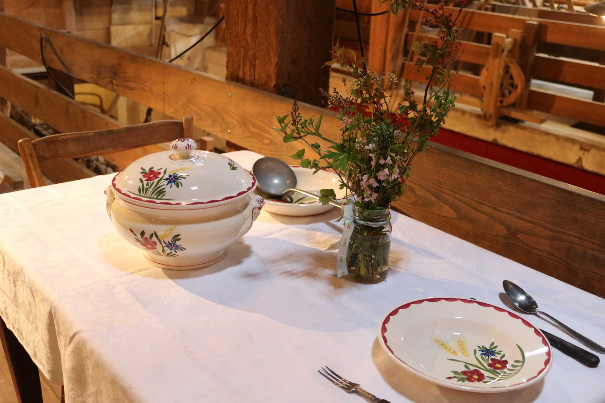
Im Melihus steckt Geschichte in jedem Detail.Die Geschichte des Hauses
Das Melihus ist ein ehemaliges Bauernhaus im Dorfkern. Es stand einst auf der Abbruchliste. Engagierte Menschen setzten sich für seinen Erhalt ein, weil Möhlin schon länger ein Gebäude für ein Dorfmuseum suchte.
Viele fleissige Hände erneuerten das Haus. Möglichst viel blieb erhalten; Fehlendes wurde mit passenden Gegenständen ergänzt. 1985 öffnete das Melihus als Dorfmuseum seine Türen.
Heute erzählen Wohnraum, Küche mit Holzherd und Ofen, Schlafräume und Knechtenkammer vom früheren Alltag. In der Scheune stehen Geräte der Land- und Forstwirtschaft. Zu sehen sind auch Wäscherei, Schumacherwerkzeug, Leder- und Sattlerhandwerk sowie Geschirr der ehemaligen «Chacheli-Fabrik Niderweiler».
Jedes Jahr gibt es eine neue Wechselausstellung. Kommen Sie vorbei und entdecken Sie das Haus selbst.
Ihr MelihusIm Museum
Die Sammlung bewahrt die Spuren des Dorflebens, der Handwerke und der Industrie in Möhlin-Ryburg. 2026 widmet sich die Wechselausstellung dem 100-jährigen Bestehen des Wasserfahrvereins Ryburg-Möhlin.
Besuch planen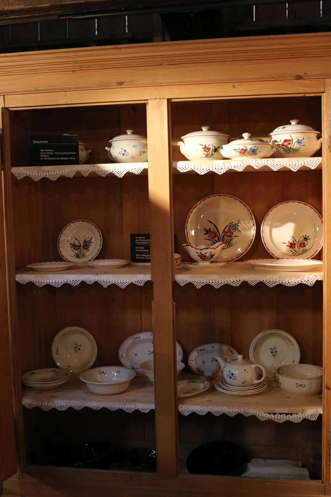
Öffnungszeiten & Aktivitäten
Der Eintritt ist kostenlos. Spenden sind willkommen. Programmänderungen bleiben möglich.
Ausstellung «100 Jahre Wasserfahrverein Ryburg-Möhlin» und Kaffeestube im Museum.
Führungen in der Saline Riburg mit Schweizer Salinen, Shuttle ab Museum und Kaffeestube.
«Wir Unterdorfkinder» und «Lebenslänglich Lebensretter»: Autorenlesung mit Horst Heckendorn, dazu Kaffeestube.
60 Jahre Kulturkommission Möhlin: Kulinarik, Musik und Sommerlaune rund ums Melihus. Bar im Museum.
Selber machen und anschliessend die Kaffeestube im Museum besuchen.
Rund ums Melihus, mit Tombola, Kaffeestube und Märchenlesung.
Besuch & Führungen
Das Museum ist an den Programmtagen geöffnet. Führungen und individuelle Anlässe sind nach Absprache auch ausserhalb der Öffnungszeiten möglich.
Führung anfragenDer Museumsverein
Der Museumsverein lebt vom Engagement der Gemeinschaft. Mitgliederbeiträge, Sponsoring und Spenden ermöglichen Ausstellungen, Begegnungen und die Pflege der historischen Exponate.
Mitglieder unterstützen den kulturhistorischen Wissenszugang für alle und die lebendige Vereinskultur in Möhlin.
Spenden helfen, abwechslungsreiche Ausstellungen zu organisieren, die Geschichte weiter zu dokumentieren und Exponate fachgerecht zu erhalten.
So bleiben traditionelles Handwerk, Dorfgeschichte und Begegnungen für Jung und Alt lebendig.
QR-Zahlschein öffnenRäume im Melihus
Die Räumlichkeiten des Dorfmuseums können gemietet werden: für private Führungen, Geburtstagsapéros oder Brunch, Anlässe mit Kundinnen, Kunden und Mitarbeitenden oder eine Trauung in der rustikalen Scheune.
Auch Buchlesungen, Vorträge, Chorauftritte, Theaterstücke und Kunstausstellungen sind willkommen. Der Verein freut sich über Ihre Idee.
Menschen hinter dem Museum
Kontakt zum Co-Präsidium: Sybille Guarnieri und Cécile Perrig sind über info@melihus.ch erreichbar.
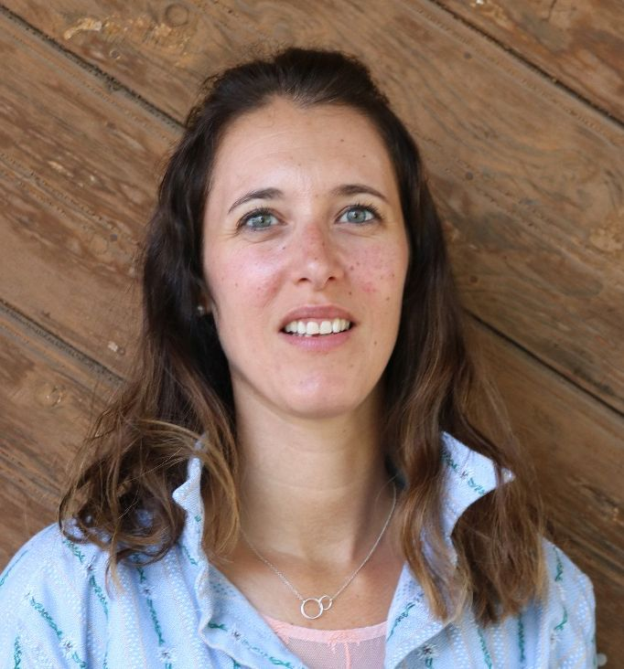
Cécile Perrig-Ansermet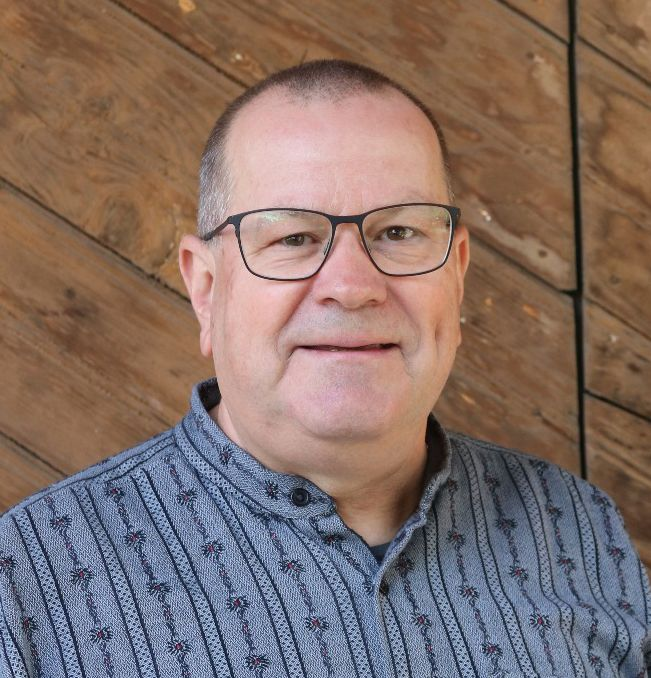
Christian Müller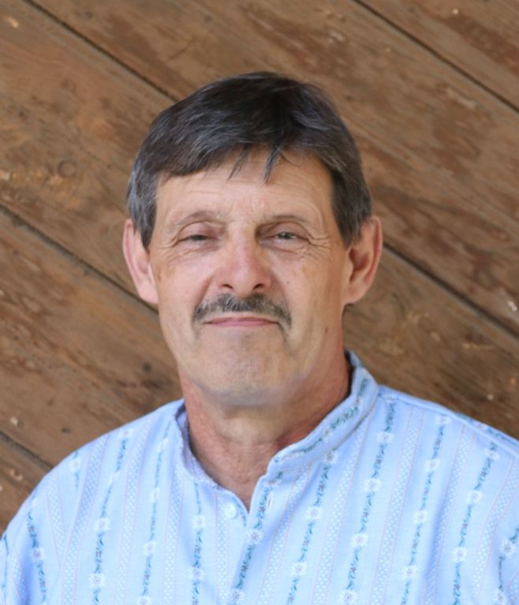
Beat Waldmeier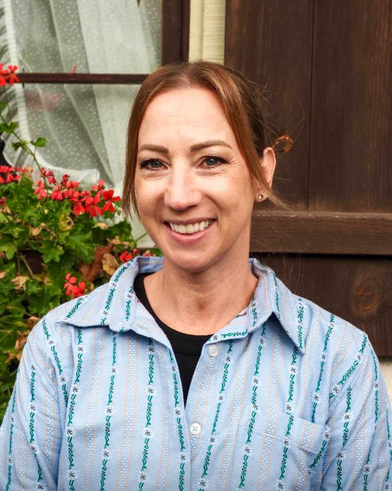
Melanie Cuppuleri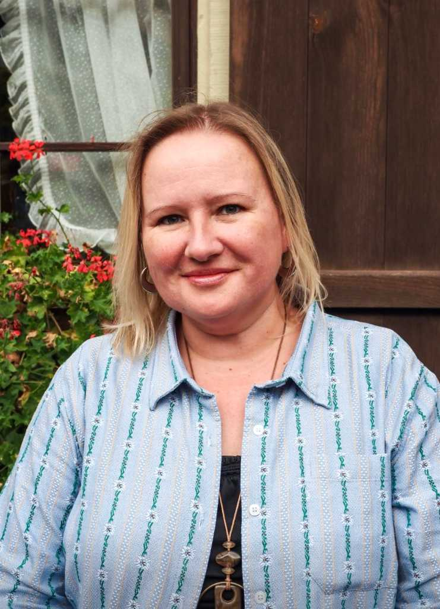
Iva Fromm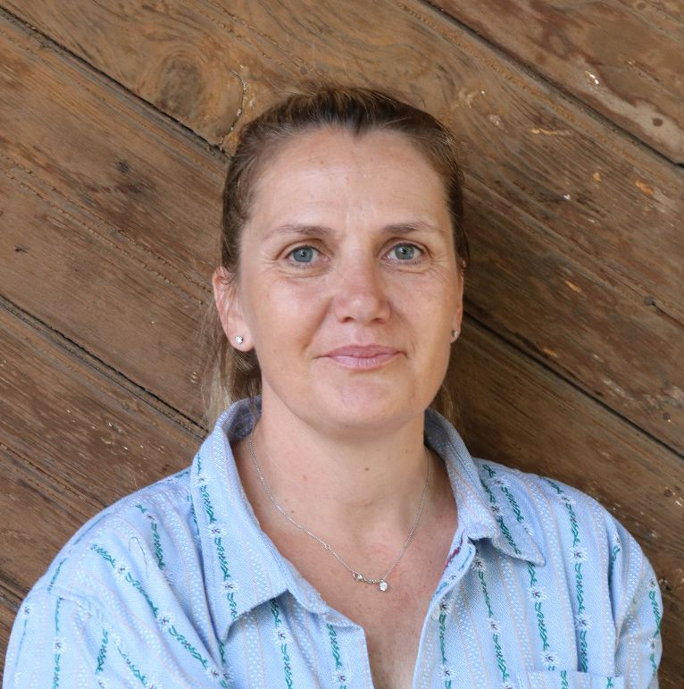
Patricia GodenaAus dem Museum
Publikationen können über den Verein angefragt werden. Das Jubiläumsbuch ist auch im Museum und im Gemeindehaus Möhlin erhältlich.
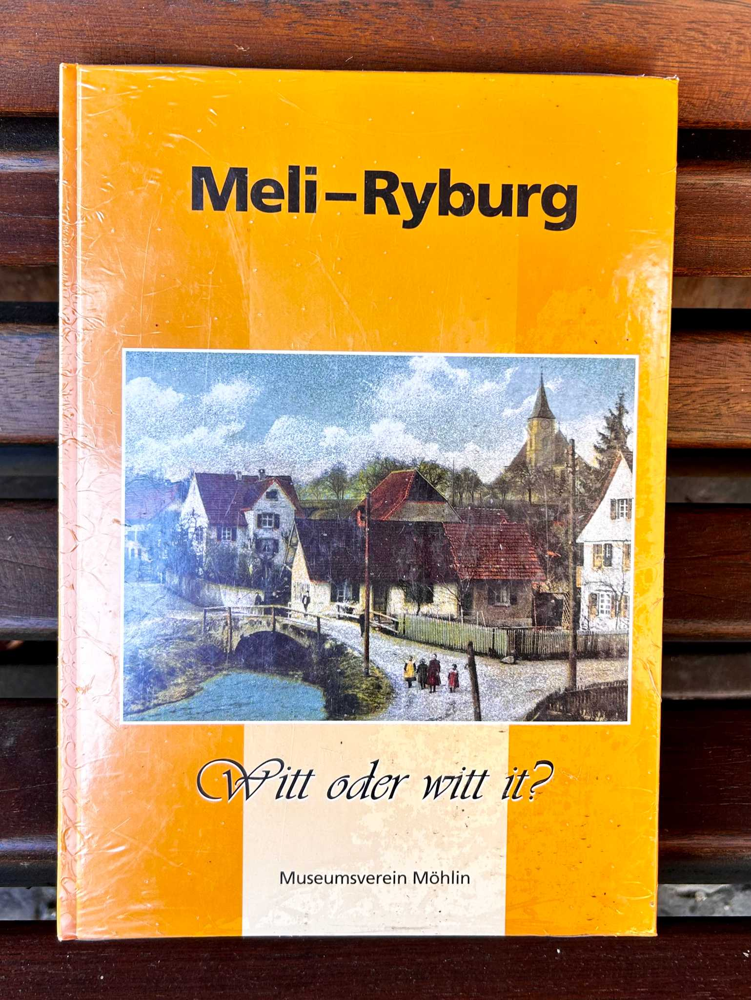
Das Jubiläumsbuch erzählt mit Erinnerungen und Bildern von der Dorfentstehung, Dorfanlässen und der früheren Wasserversorgung.
CHF 20.– · bei Postversand zzgl. Porto & Verpackung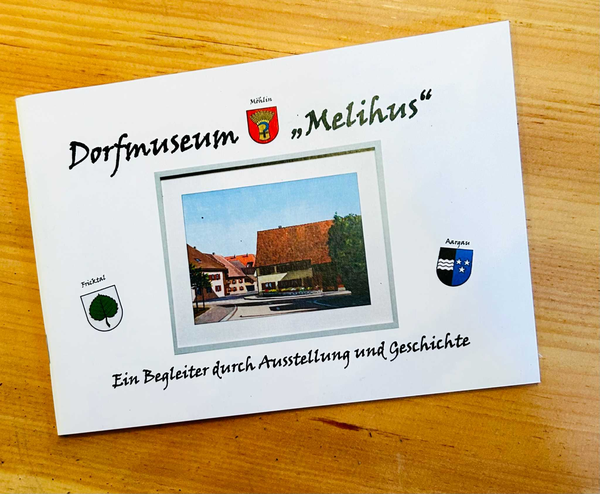
Ein Begleiter durch Ausstellung und Geschichte.
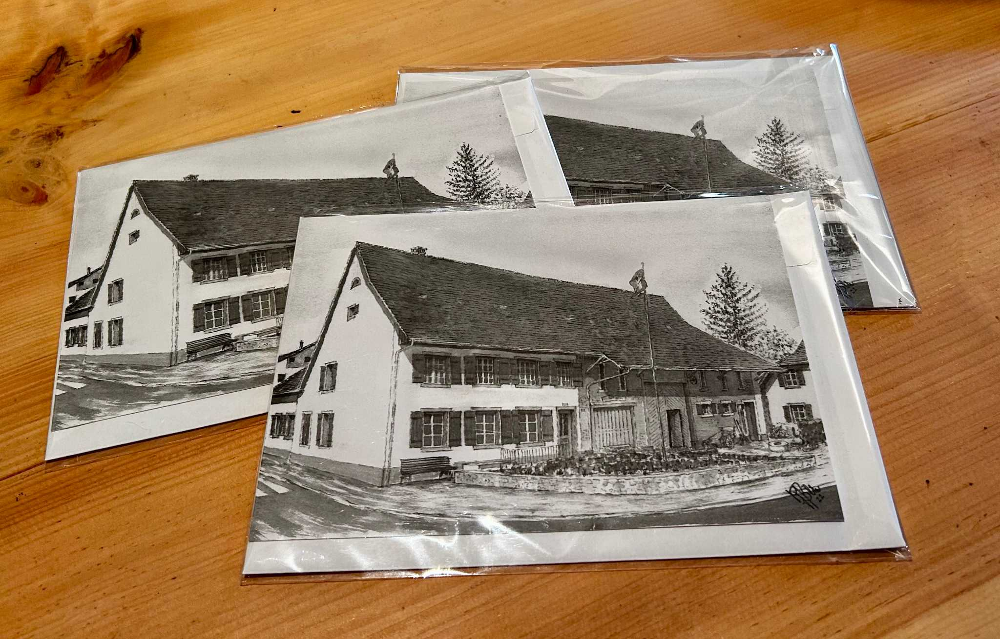
Ansichten des historischen Dorfmuseums.
Verbunden in der Region